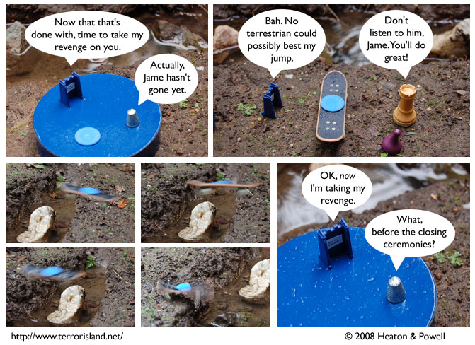

Strip #258
— Monday, February 4, 2008
Ned thinks terrestrians are hampered by their planet’s high gravity.
Notes, Thoughts, &c.
Ben’s Notes
The pictures of Jame’s jump took a lot of tries. Most of the shots either didn’t show Jame at all, or showed my hand tossing him across. Fortunately, simply increasing the number of pictures I take per session can make up for a lot.
Lewis’s Notes
Ned’s teleportation got me thinking about miracles, like cursing fig trees and finding money inside of fish. A more famous miracle I was thinking about was one that involved turning water into wine. I am trying to determine whether or not that qualifies as alchemy.